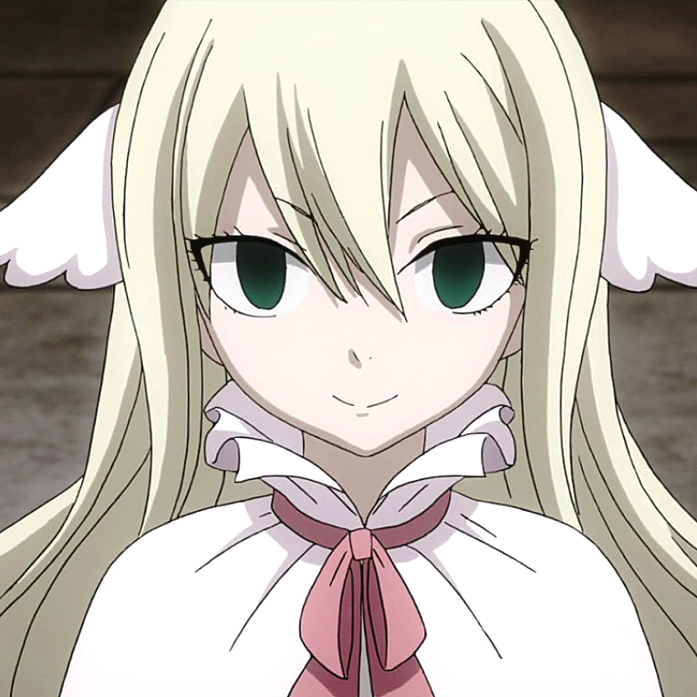

|  |
Mavis Vermillion was the first Guild Master and co-founder of the Fairy Tail Guild. Despite her body being comatose and sealed within a Lacrima that has become to be known as Fairy Heart, she continues to interact with the guild and its members as a Thought Projection. Ultimately after a long time of being encased in Lacrima, Mavis' real body is freed with painstaking efforts of Cana and her usage of Fairy Glitter.
|
 |
Precht Gaebolg was one of the founders of Fairy Tail, the guild's second Guild Master, and the one who passed on the title to Makarov Dreyar. After leaving Fairy Tail, Hades later became the founder and leader of the Dark Guild, Grimoire Heart.
|
|
Makarov Dreyar is the 3rd, 6th and 8th Guild Master of the Fairy Tail Guild, as well as one of the Ten Wizard Saints.Makarov is an extremely short, elderly man. He has black eyes and is growing bald with only the outer rims of his head containing white hair. He also has a thick white mustache. He has a black stamp of the Fairy Tail guild mark that covers his entire chest area.
|